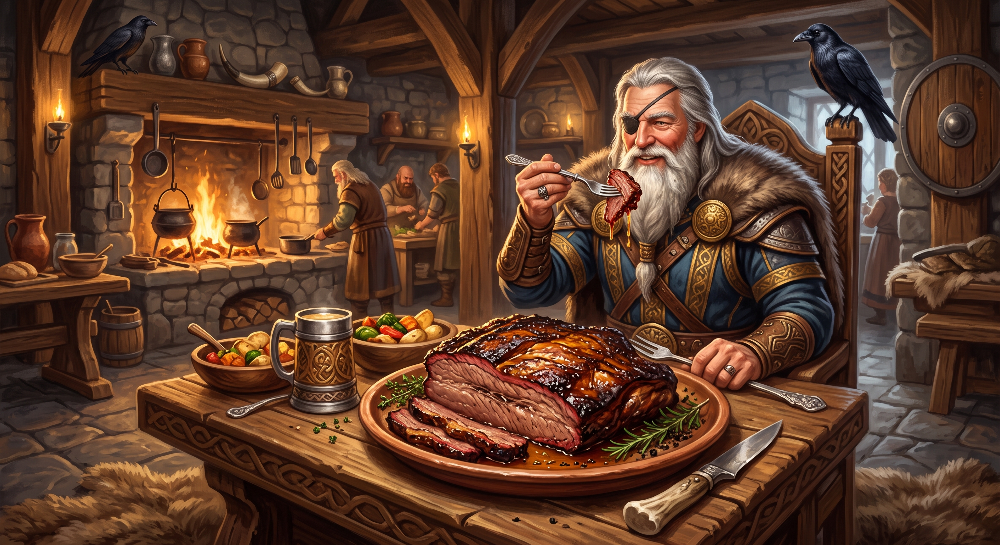
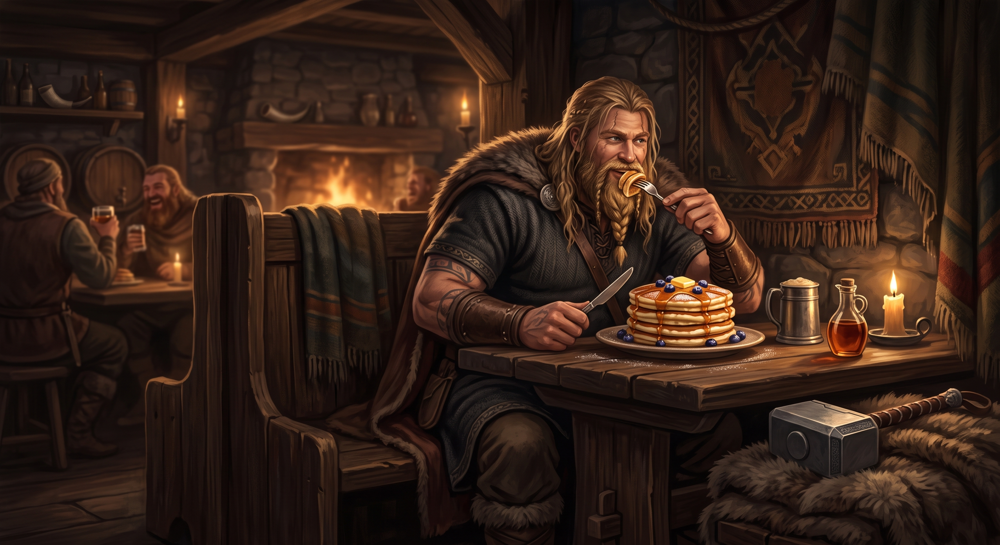
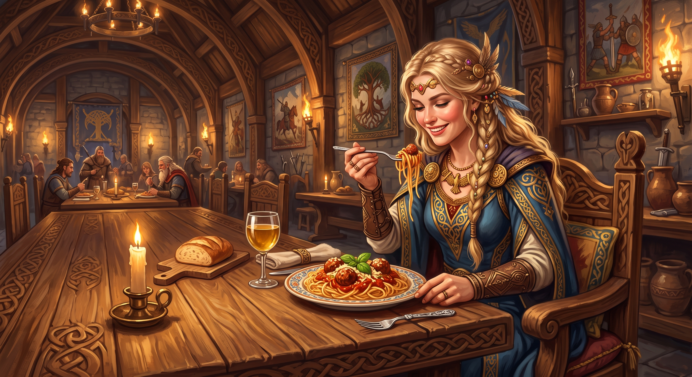

Odin only drinks wine, so he simply had to find a way to eat it too.

Thor's pancakes are so fluffy they could float over Asgard on a thundercloud.

Freya rules over love and abundance, so of course her favorite dinner is a big, generous plate of spaghetti.